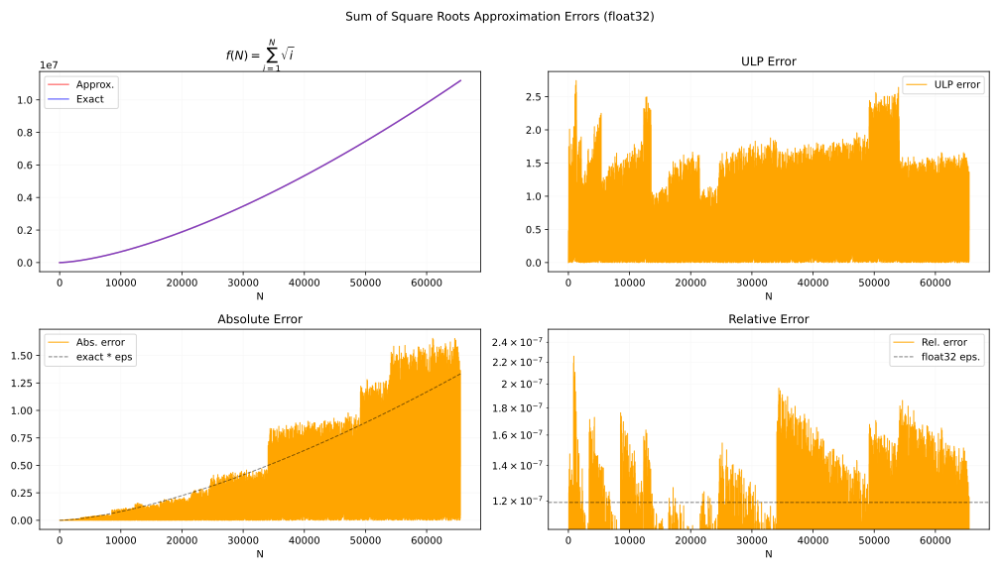
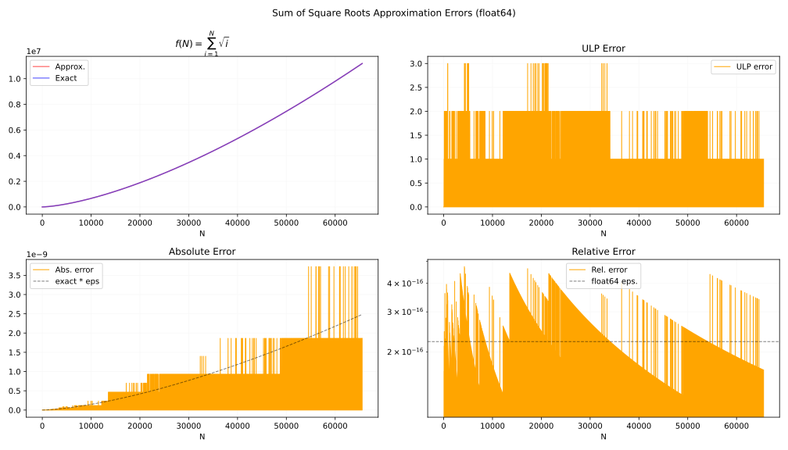

何かあれば GitHub のリポジトリに issue を作るか ryukau@gmail.com までお気軽にどうぞ。
Update: 2026-06-23
Sum of square roots は以下の関数です。
\[ S(N) = \sum_{n=1}^{N} \sqrt{n}. \]
\(N\) は 0 以上の整数です。 \(N=0\) のときは足し合わせる項がないので \(S(0) = 0\) です。
\(S\) は \(x^2 \bmod 1\) の逆微分を計算するときに使えます。
以下は検証に使ったコードへのリンクです。
\(S\) は Riemann zeta function と似た形をしています。以下は \(\mathrm{Re}(s) \ge 1\) における Riemann zeta function の定義です。
\[ \zeta(s) = \sum_{n=1}^\infty n^{-s}. \]
\(s=-1/2\) と代入すると、総和の上限以外は \(S\) と同じです。
\[ \zeta(-1/2) = \sum_{n=1}^\infty n^{1/2}. \]
ここでは \(S\) と \(\zeta(-1/2)\) を Euler-Maclaurin formula でつなげて近似式を得るという方針を取っています。 Euler-Maclaurin formula は総和と積分の関係を表した式で、積分を総和に、あるいは総和を積分に変えて近似計算できる形が得られることがあります。 \(\zeta(-1/2)\) は \(\mathrm{Re}(s) \ge 1\) を満たしていませんが、以降の式変形で何とかします (analytic continuation) 。
“Euler-Maclaurin Formula” (people.csail.mit.edu/kuat) に掲載されている Euler-Maclaurin formula を使います。 \([a, N]\) の範囲の総和を近似する一般的な形です。 \(\sum_{i=2}^k\) の項は \(i\) が 3 以上の奇数のときに \(b_i = 0\) となるので、実質は 2 刻みで総和を取っています。
\[ \begin{aligned} \sum_{n=a}^N f(n) &\sim \int_a^N f(x)\;dx + \frac{f(N) + f(a)}{2} + \sum_{i=2}^{k} \frac{b_i}{i!} (f^{(i-1)}(N) - f^{(i-1)}(a)) + R_k. \\ R_k &= \int_a^N \frac{B_k(\{1 - t\})}{k!} f^{(k)}(t) dt. \end{aligned} \]
式変形中に以下の関数を使います。
\(\zeta\) に Euler-Maclaurin formula を当てはめます。 \(g(x) = x^{-s}\) 、 \(a=1\) として以下のように式を立てます。 \(g\) は \(\zeta\) の総和の各項 \((n^{-s})\) と対応します。
\[ \sum_{n=1}^N n^{-s} = \int_1^N g(x) dx + \frac{N^{-s} + 1}{2} + \sum_{i=2}^k \frac{b_i}{i!} \left(g^{(i-1)}(N) - g^{(i-1)}(1)\right) + \int_1^N \frac{B_k(\{1 - t\})}{k!} g^{(k)}(t) dt. \]
\(N \to \infty\) の極限を取ります。 \(\text{Re}(s) > 1\) であれば、以下の \(\infty\) が絡む項が収束します。
先の式に代入すると \(\zeta(s)\) についての Euler-Maclaurin formula が得られます。この式は \(\zeta\) の analytic continuation の 1 つです。
\[ \zeta(s) = \frac{1}{s-1} + \frac{1}{2} - \sum_{i=2}^k \frac{b_i}{i!} g^{(i-1)}(1) + \int_1^\infty \frac{B_k(\{1 - t\})}{k!} g^{(k)}(t) dt. \]
ここで \(g(x) = x^{-s}\) の定義より、右辺の \(\int_1^\infty\) の項 (remainder term) は \(\mathrm{Re}(s) > 1 - k\) のときに収束します。ターゲットとなる \(\zeta(-1/2)\) では \(k \geq 2\) であれば収束するので計算できそうです。 \(h(x) = x^{1/2}\) です。
\[ \zeta(-1/2) = -\frac{2}{3} + \frac{1}{2} - \sum_{i=2}^k \frac{b_i}{i!} h^{(i-1)}(1) + \int_1^\infty \frac{B_k(\{1 - t\})}{k!} h^{(k)}(t) dt. \]
次に \(S\) に Euler-Maclaurin formula を当てはめます。
\[ \sum_{n=1}^N n^{1/2} = \underbrace{\int_1^N x^{1/2} dx}_{\text{Integral term}} + \frac{N^{1/2} + 1}{2} + \sum_{i=2}^k \frac{b_i}{i!} \left(h^{(i-1)}(N) - h^{(i-1)}(1)\right) + \underbrace{\int_1^N \frac{B_k(\{1 - t\})}{k!} h^{(k)}(t) dt}_{R_k}. \]
1 つめの区間積分を展開し、もう一つの区間積分である remainder term を \(\int_1^N = \int_1^\infty - \int_N^\infty\) と 2 つの区間に分割します。
\[ \begin{aligned} \sum_{n=1}^N n^{1/2} =& \underbrace{\left( \frac{2}{3}N^{3/2} - \frac{2}{3} \right)}_{\text{Integral term}} + \frac{N^{1/2}}{2} + \frac{1}{2} + \sum_{i=2}^k \frac{b_i}{i!} h^{(i-1)}(N) - \sum_{i=2}^k \frac{b_i}{i!} h^{(i-1)}(1) \\ &+ \underbrace{\left( \int_1^\infty \frac{B_k(\{1 - t\})}{k!} h^{(k)}(t) dt - \int_N^\infty \frac{B_k(\{1 - t\})}{k!} h^{(k)}(t) dt \right)}_{R_k}. \end{aligned} \]
項を並べ替えると \(\zeta(-1/2)\) が見つかります。
\[ \begin{aligned} \sum_{n=1}^N n^{1/2} =& \frac{2}{3}N^{3/2} + \frac{N^{1/2}}{2} + \underbrace{\left( -\frac{2}{3} + \frac{1}{2} - \sum_{i=2}^k \frac{b_i}{i!} h^{(i-1)}(1) + \int_1^\infty \frac{B_k(\{1 - t\})}{k!} h^{(k)}(t) dt \right)}_{\zeta(-1/2)}\\ &+ \sum_{i=2}^k \frac{b_i}{i!} h^{(i-1)}(N) - \int_N^\infty \frac{B_k(\{1 - t\})}{k!} h^{(k)}(t) dt. \end{aligned} \]
整理します。
\[ \sum_{n=1}^N n^{1/2} = \frac{2}{3}N^{3/2} + \frac{1}{2}N^{1/2} + \zeta(-1/2) + \sum_{i=2}^k \frac{b_i}{i!} h^{(i-1)}(N) - \int_N^\infty \frac{B_k(\{1 - t\})}{k!} h^{(k)}(t) dt. \]
以降では \(k \geq 2\) とします。また \(i\) が 3 以上の奇数のとき \(b_i = 0\) なので \(k\) を偶数に狭められます。
Remainder term \(R_k\) を解いて許容誤差 \(\epsilon\) が与えられたときに \(k\) を決める式を導きます。式の見通しをよくするため \(1/k!\) は積分の外に出しています。
\[ R_k = - \frac{1}{k!} \int_N^\infty B_k(\{1 - t\}) h^{(k)}(t) dt. \]
ここで Bernoulli polynomial \(B_k\) について以下の性質があります。
\[ \begin{aligned} \frac{d}{dx} B_k(t) &= k B_{k - 1}(t). && \text{(recurrence relation)} \\ B_k(1 - t) &= (-1)^k B_k(t). && \text{(symmetry)} \\ \end{aligned} \]
\(B_{k+1}(\{1 - t\})\) にあてはめると以下の式が得られます。
\[ \frac{d}{dt} B_{k+1}(\{1 - t\}) = -(k + 1) B_k(\{1 - t\}). \]
\(B_k\) について解きます。
\[ B_k(\{1 - t\}) = -\frac{1}{k+1} \frac{d}{dt} B_{k+1}(\{1 - t\}). \]
\(R_k\) に代入します。積分の展開では \(u = h^{(k)}(t)\) かつ \(v' = \dfrac{d}{dt} B_{k+1}(\{1 - t\}) dt\) と置いて部分積分の公式を適用しています。
\[ \begin{aligned} R_k &= - \frac{1}{(k+1)!} \int_N^\infty \left( \frac{d}{dt} B_{k+1}(\{1 - t\}) \right) h^{(k)}(t) dt. \\&= - \frac{1}{(k+1)!} \left( \left[ B_{k+1}(\{1 - t\}) h^{(k)}(t) \right]_N^\infty - \int_N^\infty B_{k+1}(\{1 - t\}) h^{(k+1)}(t) dt \right). \end{aligned} \]
角かっこの境界項 \(\left[\ \right]_N^\infty\) について以下のことが言えます。
よって境界項は 0 になるので \(R_k\) が以下の形に変形できます。
\[ R_k = \frac{1}{(k+1)!} \int_N^\infty B_{k+1}(\{1 - t\}) h^{(k+1)}(t) dt. \]
さらにもう一度、同様の変形を行ってインデックス \(k+2\) が出てくるように \(R_k\) を変形します。
\[ \begin{aligned} R_k &= \frac{1}{(k+2)!} \int_N^\infty \left( \frac{d}{dt} B_{k+2}(\{1 - t\}) \right) h^{(k+1)}(t) dt \\&= \frac{1}{(k+2)!} \left( \left[ B_{k+2}(\{1 - t\}) h^{(k+1)}(t) \right]_N^\infty - \int_N^\infty B_{k+2}(\{1 - t\}) h^{(k+2)}(t) dt \right). \end{aligned} \]
角かっこの境界項 \(\left[\ \right]_N^\infty\) について以下のことが言えます。
展開します。
\[ \left[ \frac{B_{k+2}(\{1 - t\})}{(k+2)!} h^{(k+1)}(t) \right]_N^\infty = 0 - \frac{B_{k+2}}{(k+2)!} h^{(k+1)}(N). \]
\(R_k\) に代入します。
\[ \begin{aligned} R_k &= -\frac{B_{k+2}}{(k+2)!} h^{(k+1)}(N) - \int_N^\infty \frac{B_{k+2}(\{1 - t\})}{(k+2)!} h^{(k+2)}(t) dt \\&= -\frac{B_{k+2}}{(k+2)!} h^{(k+1)}(N) + R_{k+2}. \end{aligned} \]
同様の変形を続けると以下の関係が現れます。
\[ R_k \sim - \frac{b_{k+2}}{(k+2)!} h^{(k+1)}(N) - \frac{b_{k+4}}{(k+4)!} h^{(k+3)}(N) - \frac{b_{k+6}}{(k+6)!} h^{(k+5)}(N) - \dots \]
総和の形にします。この総和は \(S\) の Euler-Maclaurin formula の総和項 \(\sum_{i=2}^k\) の続きと同じ形です。
\[ R_k \sim -\sum_{i=k+2}^\infty \frac{b_i}{i!} h^{(i-1)}(N). \]
総和の初項が誤差です。
\[R_k \approx -\frac{B_{k+2}}{(k+2)!} h^{(k+1)}(N) = -\frac{B_{k+2} P_{k+1}}{(k+2)!} N^{-(k+1/2)}, \quad P_{k} = \prod_{i=1}^{k} \left( \frac{3}{2} - i \right). \]
誤差がマシンイプシロン \(\epsilon\) 以下となるように不等式を立てます。
\[ \epsilon \ge \left| -\frac{B_{k+2} P_{k+1}}{(k+2)!} N^{-(k+1/2)} \right|. \]
\(N\) について解きます。
\[ N \ge \left| \frac{B_{k+2} P_{k+1}}{(k+2)!} \cdot \frac{1}{\epsilon} \right|^{1/(k + 1/2)}. \]
これで \(\epsilon\) から \(N\) が得られるようになりました。実装します。
import numpy as np
import scipy.special as special
def compute_min_n_table(epsilon: float = np.finfo(np.float64).eps, max_order: int = 20):
B = special.bernoulli(max_order + 2)
P = [1.0]
value = 1.0
for i in range(1, max_order + 3):
value *= 3.0 / 2.0 - i
P.append(value)
results = []
for k in range(2, max_order + 2, 2):
coeff = abs((B[k + 2] / special.factorial(k + 2)) * P[k + 1])
power = k + 0.5
min_n = (coeff / np.finfo(dtype).eps) ** (1.0 / power)
results.append(
{
"k": k,
"Term": f"b_{k}",
"Power": power,
"Coeff": coeff,
"Min_N": min_n,
}
)
# print は省略。以下は整形した実行結果です。
--- float32
k Term Power Coeff Min N LUT Size
2 b_2 2.5 5.2083333e-04 29 116 B
4 b_4 4.5 1.0850694e-04 5 20 B
6 b_6 6.5 6.7138672e-05 3 12 B
8 b_8 8.5 8.2651774e-05 3 12 B
10 b_10 10.5 1.6893130e-04 2 8 B
12 b_12 12.5 5.1660339e-04 2 8 B
14 b_14 14.5 2.2081132e-03 2 8 B
16 b_16 16.5 1.2570609e-02 3 12 B
18 b_18 18.5 9.1942717e-02 3 12 B
20 b_20 20.5 8.4016314e-01 3 12 B
--- float64
k Term Power Coeff Min N LUT Size
2 b_2 2.5 5.2083333e-04 88737 693 KiB
4 b_4 4.5 1.0850694e-04 396 3 KiB
6 b_6 6.5 6.7138672e-05 59 472 B
8 b_8 8.5 8.2651774e-05 23 184 B
10 b_10 10.5 1.6893130e-04 14 112 B
12 b_12 12.5 5.1660339e-04 10 80 B
14 b_14 14.5 2.2081132e-03 8 64 B
16 b_16 16.5 1.2570609e-02 7 56 B
18 b_18 18.5 9.1942717e-02 7 56 B
20 b_20 20.5 8.4016314e-01 6 48 Bここでは N < (Min N)
の範囲でルックアップテーブルを使います。 LUT Size は
Min N を下回る \(N\)
の値をルックアップテーブルにしたときの大まかなサイズです。単位の
B はバイト、 KiB は kibibyte (2^10) です。
CPU の L1 キャッシュの大きさは数十から数百 KiB なので、 f64 では \(k=6\)
以上から実用的な近似となりそうです。 f32 は \(k=4\) で十分そうです。
\(S\) の近似式を再掲します。 Remainder term は \(R_k\) とします。
\[ \sum_{n=1}^N n^{1/2} = \frac{2}{3}N^{3/2} + \frac{1}{2}N^{1/2} + \zeta(-1/2) + \sum_{i=2}^k \frac{b_i}{i!} h^{(i-1)}(N) + R_k. \]
級数項 \(\sum_{i=2}^k\) を展開します。
\[ \begin{aligned} \sum_{i=2}^\infty \frac{b_i}{i!} h^{(i-1)}(N) &= \frac{1}{24} N^{-1/2} - \frac{1}{1920} N^{-5/2} + \frac{1}{9216} N^{-9/2} - \frac{11}{163840} N^{-13/2} + \dots \\ &= \sqrt{N} \left( \frac{1}{24} - \frac{1}{1920} N^{-2} + \frac{1}{9216} N^{-4} - \frac{11}{163840} N^{-6} + \dots \right) \end{aligned} \]
Order (k) Power of N Coefficient (Rational) Coefficient (Float)
---------------------------------------------------------------------------
2 -1/2 1/24 +4.16666666666666644e-02
4 -5/2 -1/1920 -5.20833333333333326e-04
6 -9/2 1/9216 +1.08506944444444438e-04
8 -13/2 -11/163840 -6.71386718750000054e-05
10 -17/2 65/786432 +8.26517740885416712e-05
12 -21/2 -223193/1321205760 -1.68931295001317576e-04
14 -25/2 52003/100663296 +5.16603390375773076e-04
16 -29/2 -4741887/2147483648 -2.20811320468783379e-03
18 -33/2 4535189795/360777252864 +1.25706090364560846e-02
20 -37/2 -25273021529/274877906944 -9.19427167136745993e-02実装します。
from mpmath import mp
import numpy as np
def sum_sqrt_mp_array(N: int):
y = [mp.mpf(0)]
for i in range(1, N):
y.append(y[-1] + mp.sqrt(i))
return [float(v) for v in y]
table_threshold = 64
table = sum_sqrt_mp_array(table_threshold)
def sum_of_sqrt_k2(N: int, dtype=np.float32):
"""f32 approximation (table size can be reduced)."""
if N < table_threshold:
return dtype(table[N])
N = dtype(N)
sqrt_n = np.sqrt(N, dtype=dtype)
zeta_term = dtype(-0.2078862249773545660) # zeta(-0.5)
base = (dtype(2.0) / dtype(3.0) * N + dtype(0.5)) * sqrt_n + zeta_term
m = dtype(1) / (N * N)
v = dtype(1) / dtype(24)
return base + (v / sqrt_n)
def sum_of_sqrt_k6(N: int, dtype=np.float64):
"""f64 approximation."""
if N < table_threshold:
return dtype(table[N])
N = dtype(N)
sqrt_n = np.sqrt(N, dtype=dtype)
zeta_term = dtype(-0.2078862249773545660) # zeta(-0.5)
base = (dtype(2.0) / dtype(3.0) * N + dtype(0.5)) * sqrt_n + zeta_term
m = dtype(1) / (N * N)
v = dtype(1) / dtype(9216)
v = v * m + dtype(-1) / dtype(1920)
v = v * m + dtype(1) / dtype(24)
return base + (v / sqrt_n)以下は f32 かつ \(k=2\) とした近似の誤差のプロットです。

以下は f64 かつ \(k=6\) とした近似の誤差のプロットです。

以下は誤差が最大となる \(N\) です。既知の値だけをリストしています。 f32, f64 ともに 3 ULP を超える誤差は見つかっていません。
--- f32, known max ULP arguments
N = [1076, 1178, 1271, 1274, 1310, 50258, 50327, 51617, 51698, 52178, 52481, 52910, 53324, 53408, 53864, 53975, 13277116, 13308523, 13320373, 13378468, 13448086, 13469641, 13483714, 13486981, 13487779, 13491181, 13500715, 13507162, 13529779, 13533154, 13534018, 13537963, 13541224, 13546933, 13565488, 13566907, 13569166, 13570855, 13572724, 13573654, 13577083, 13580077, 13584736, 13594366, 13599022, 13602013, 13603198, 13609936, 13610671, 13623235, 13633360, 13636243, 13636939, 13638946, 13657138, 13657849, 13662052, 13662718, 13675669, 13678300, 13679212, 13680655, 13685221, 13687096, 13697017, 13698526, 13700176, 13700617, 13701349, 13702372, 13704814, 13708330, 13709017, 13710928, 13714660, 13717765, 13720429, 13721422, 13728352, 13728703, 13731739, 13735729, 13739935, 13745101, 13747516, 13754440, 13754641, 13754842, 13755043, 13755244, 13755445, 13756720, 13759558, 13761190, 13762054, 13765927, 13766389, 13766851, 13772071, 13773247, 13778452, 13778548, 13780714, 13782262, 13783453, 13787077, 13788484, 13789153, 13792018, 13795975, 13796608, 13797805, 13800163, 13805353, 13806193, 13806877, 13807561, 13808089, 13808617, 13808989, 13813747, 13814638, 13815805, 13816021, 13816756, 13817767, 13818562, 13819357, 13821067, 13823347, 13824046, 13824745, 13827679, 13829758, 13830301, 13832284, 13834051, 13835128, 13836472, 13842886, 13845484, 13845544, 13847221, 13847926, 13847986, 13848631]
--- f64, known max ULP arguments
N = [797, 812, 839, 4241, 32668, 130891]C++20 です。
#include <array>
#include <cmath>
#include <concepts>
#include <cstdint>
#include <type_traits>
template<std::floating_point T> inline T sum_of_sqrt(uint64_t N) {
alignas(64) static constexpr std::array<T, 64> table{
T(0.00000000000000000e00), T(1.00000000000000000e00), T(2.41421356237309492e00),
T(4.14626436994197256e00), T(6.14626436994197256e00), T(8.38233234744176237e00),
T(1.08318220902249394e01), T(1.34775734012895310e01), T(1.63060005260357208e01),
T(1.93060005260357208e01), T(2.24682781862040990e01), T(2.57849029765595006e01),
T(2.92490045916972541e01), T(3.28545558671612454e01), T(3.65962132539351828e01),
T(4.04691966001426024e01), T(4.44691966001426024e01), T(4.85923022257602639e01),
T(5.28349429128795478e01), T(5.71938418564202209e01), T(6.16659778114198005e01),
T(6.62485535063756430e01), T(7.09389692661990665e01), T(7.57348007895117945e01),
T(8.06337802750781520e01), T(8.56337802750781520e01), T(9.07327997886709312e01),
T(9.59289522113775632e01), T(1.01220454833506750e02), T(1.06605619640641251e02),
T(1.12082845215692913e02), T(1.17650609578522932e02), T(1.23307463828015315e02),
T(1.29052026474553344e02), T(1.34882978369398643e02), T(1.40799058152498247e02),
T(1.46799058152498247e02), T(1.52881820682796473e02), T(1.59046234685765455e02),
T(1.65291232684163845e02), T(1.71615788004500615e02), T(1.78018912241933464e02),
T(1.84499652940341321e02), T(1.91057091464643321e02), T(1.97690341045354131e02),
T(2.04398544977853476e02), T(2.11180874960978770e02), T(2.18036529561379808e02),
T(2.24964732791655308e02), T(2.31964732791655308e02), T(2.39035800603520784e02),
T(2.46177229032063622e02), T(2.53388331582991611e02), T(2.60668441472272150e02),
T(2.68016910700621679e02), T(2.75433109187717321e02), T(2.82916423961265195e02),
T(2.90466258396535977e02), T(2.98082031502399843e02), T(3.05763177250268484e02),
T(3.13509143942683295e02), T(3.21319393618589970e02), T(3.29193401492601765e02),
T(3.37130655425795567e02),
};
if (N < static_cast<uint64_t>(table.size())) { return table[N]; }
T n = static_cast<T>(N);
T sqrt_n = std::sqrt(n);
constexpr T zeta_term = T(-0.207886224977354566); // zeta(-0.5).
T base = ((T(2) / T(3)) * n + T(0.5)) * sqrt_n + zeta_term;
constexpr T C3 = T(1) / T(9216);
constexpr T C2 = T(-1) / T(1920);
constexpr T C1 = T(1) / T(24);
if constexpr (std::is_same_v<T, float>) {
return base + C1 / sqrt_n;
} else {
T m = T(1) / (n * n);
return base + (((C3 * m + C2) * m + C1) / sqrt_n);
}
}